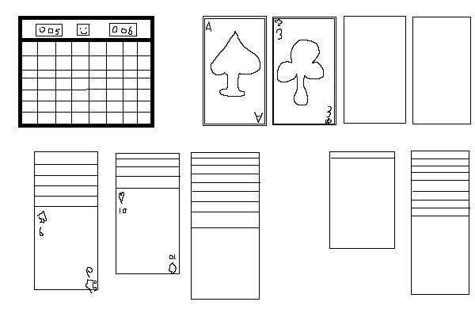
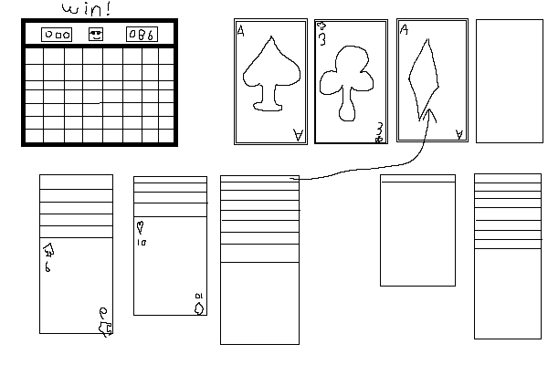

Verantwoording voor techniekfilosofie 3
Sander Landmeter - 1087172
Inleiding
Voor deze remix opdracht had ik al snel een idee: een muziek parodie van een geweldig jaren-80 nummer.
Zoals te zien is aan de presentatie van het uiteindelijke product is dit het niet geworden.
In plaats daarvan had ik gekozen om minesweeper na te maken, specifiek de windows 98 versie.
Tijdens de programmeren-3 lessen kreeg ik het idee om dit spelletje na te maken, maar kreeg pas later het idee
om dit volledig uit te werken voor dit vak.
Nadat ik minesweeper nagemaakt had, wou ik het transformeren door er een arcade versie aan toe te voegen
die elke keer als je wint het volgende veld moeilijker maakt.
Als laatste wou ik dit gaan combineren met solitaire; een ander klassiek spel.
Dit was ik van plan te gaan doen door de trekstapel te vervangen met een potje minesweeper,
en als die gewonnen wordt krijg je iets; de volgende kaart of een hele stapel te zien.
Kopiëren
Maar als eerst: het Kopiëren. Ik wou echt specifiek de windows 98 versie namaken
omdat ik dacht dat het namaken van een heel windows 98 desktop interessant zou zijn.
Aan de ene kant was het erg leuk om dit te doen, maar aan de andere is het nu 4 uur 's nachts terwijl ik dit typ.
Door de hele omgeving na te maken wou ik de ervaring van het spelen van minesweeper op een oude computer zo goed mogelijk te maken.
Het belangrijkste is natuurlijk het spel. Als je op het minesweeper icoon dubbel klikt dan zou die open moeten gaan.
Ik heb ervoor geprobeerd om alle features die in de windows 98 versie zaten te programmeren, maar helaas kwam ik in tijdnood
doordat pixel-art en frontend toch best veel tijd innamen. Wel heb ik alles wat je zou verwachten, en het spel werkt.
Je kan winnen, verliezen, vlaggen & vraagtekens plaatsen en verschillende moeilijkheidsgraden kiezen. Zelfs de smiley werk!
Het kostte behoorlijk veel tijd om alle plaatjes zelf te maken op basis van een wikipedia foto die enorm slecht te zien is,
maar er zijn blijkbaar erg weinig plaatjes op het internet van de exacte versie die ik wou maken.
Transformeren
De volgende stap in het remix-proces is het veranderen van iets in het gekopiëerde werk.
Dit wou ik doen door een arcade modus toe te voegen aan minesweeper
In deze modus blijft de tijd lopen, en elke keer als je een veld oplost kan je met het pijltje naar de volgende toe.
Dit is geïnspireerd door de oudere spellen die vaak een highscore hadden.
In deze modus wordt er bijgehouden hoe vaak je hebt gewonnen en wordt het steeds moeilijker en moeilijker om nog vaker te winnen.
Deze modus is hier te spelen,
maar alleen als je ten minste 1 keer een spel minesweeper hebt gewonnen.
Zodra dat zo is, kan je op het knopje 'Game' klikken en de optie 'Arcade' zou er dan moeten staan.
Er is van uit gegaan dat je de regels kent, en ik ook.
Een volledige inzet is waar ik aan denk, maar als het toch niet lukt,
kan je via de rechtermuisklik de webpagina inspecteren om zo te zien waar alle landmijnen zitten
Combineren
Helaas is het net niet gelukt met de tijd om hier een werkend spel te maken, maar dit ligt helemaal aan mij.
Ik heb wel een leuk idee, en een low-fidelity prototype. Erg low-fidelity, maar nog wel iets.
Het idee was om solitaire te combineren met de arcade versie die ik had gemaakt voor het transformeer-onderdeel.
In plaats van dat er een trekstapel is zoals bij standaard solitaire, is er de keuze om minesweeper te spelen om iets te winnen.

Hierboven is een snelle schets met daarin de opzet die ik in gedachten heb.
Helaas zijn mijn teken skills op paint niet al te best, maar ik denk dat het ten minste duidelijk is.
Zodra het spel van minesweeper gewonnen is, wordt een aas die onder op een stapel lag gelijk naar een van de sorteerstapels gebracht.
Hieronder heb ik nog een mooie schets waarin dit is afgebeeld:

Omdat dit de arcade versie van minesweeper is, wordt het moeilijker elke keer dat je speelt.
Zo kan je niet alleen minesweeper blijven spelen, want dit spel hangt ook een beetje van geluk af,
dus hoe vaker je speels hoe groter de kans is dat je verliest.
Als je een mijn raakt in deze minesweeper minigame is ook het solitaire spel gelijk klaar.
Het algemene idee is om solitaire wat minder frustrerend te maken
door een optie te bieden om een onmogelijke situatie nog steeds op te lossen indien je minesweeper wint.
Zelf heb ik aardig wat solitaire gespeeld, en vooral in de oude windows 98 versie is het best baak zo dat je vast loopt en niet verder kan spelen.
Met deze minesweeper optie is het altijd mijn eigen schuld als ik verlies door op een landmijn te klikken, en weet ik dat ik verloren heb.
Nu ik dit aan het typen ben is het 5 uur 's ochtends,
dus ik hoop je success te wensen bij het nakijken van de rest.
Voordat je dat doet, kan ik je misschien nog interesseren in een...
Knop?